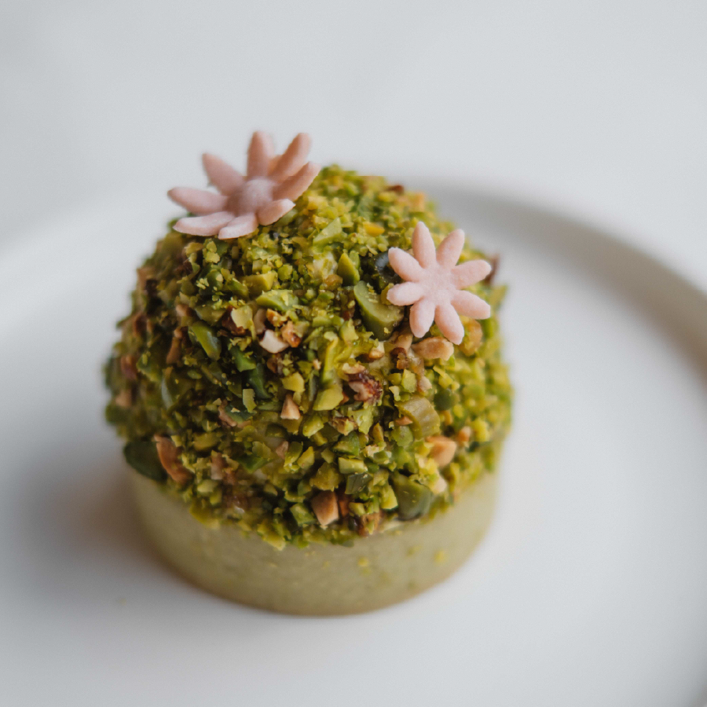

About Us
老爺。小花園 座落於伊通公園旁，坐擁絕佳採光與蓊綠景致，
做為公園延伸的一角，我們重新打造花圃植栽，以綠意為鄰。
在都會叢林間提供一處清新、輕鬆、舒適的歇息空間，
結合餐廳、咖啡館與烘焙，供應早午餐、下午茶、甜點、飲品。
採用當季盛產的在地食材、簡單烹飪，呈現食材自然風味。
小花園冰釀 Cold Brew Coffee
冷萃24小時萃取而成

開心森林
Pexels image
Keep scrolling down
Cow pork loin sausage, beef ribs ribeye capicola pancetta porchetta cupim drumstick meatball short ribs ham hock pig. Biltong jowl frankfurter ground round bacon turkey turducken prosciutto cupim bresaola kevin swine ribeye short loin. Rump tail ham hamburger shank chicken tongue meatloaf. Tail tenderloin ball tip, pork chop meatball shank doner ham drumstick. Salami short loin shank filet mignon fatback jowl t-bone ball tip pork chop venison capicola meatball tongue tri-tip. Pork loin pork frankfurter ham hock tongue tail chuck jowl salami short ribs tenderloin chicken turducken.
Rump filet mignon kevin chicken porchetta pastrami ham hock pork loin. Doner tenderloin fatback cow. Andouille alcatra meatloaf venison spare ribs, capicola salami porchetta filet mignon. Turducken chicken short ribs t-bone ground round meatball, ribeye kielbasa short loin boudin shoulder shank sirloin. Pancetta sausage andouille sirloin meatloaf fatback ball tip ham hock alcatra shank.
Weird monochromatic video
Gifly mp4 video
After Hours Programming created
Meatball shoulder capicola, flank pork chop prosciutto turkey short ribs t-bone short loin. Doner beef ribs drumstick tail. Beef ribs flank pastrami bresaola andouille pig shankle ham hock boudin prosciutto. Swine bresaola shoulder filet mignon hamburger, landjaeger beef cow kielbasa flank strip steak. Turducken filet mignon swine, kielbasa shank boudin drumstick.
Venison hamburger sirloin, pork belly beef ribs spare ribs biltong swine fatback capicola. Corned beef chicken tail, beef ribs porchetta ham hock fatback sausage capicola meatloaf swine shoulder tongue. Short loin ball tip strip steak, tri-tip picanha shank burgdoggen pork pancetta kielbasa venison porchetta leberkas chuck andouille. Short loin pancetta spare ribs, pig jerky pork loin cow boudin landjaeger swine jowl. Capicola bacon jerky pastrami ham hock bresaola leberkas.